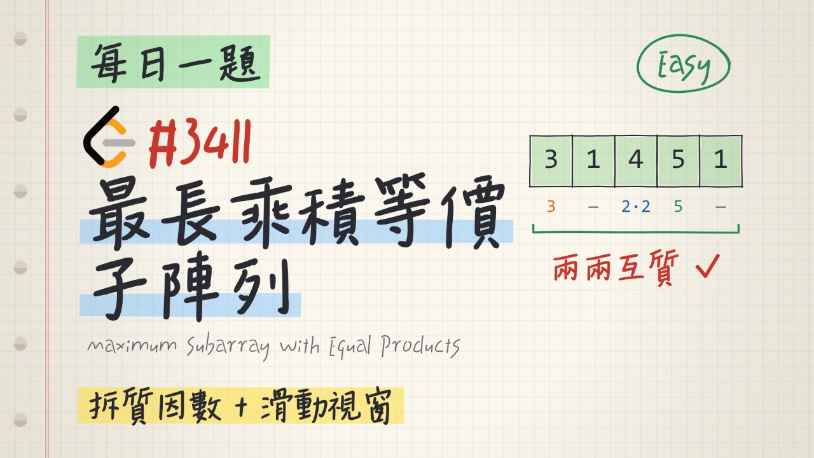
3411. Maximum Subarray With Equal Products
最長乘積等價子陣列 每日一題
條件是 prod = lcm × gcd。直接枚舉所有子陣列、乘積太大就停，O(n²) 就能過。找規律：長度 ≥ 3 時成立 ⇔ 兩兩互質；數字只到 10，質因數只有 2、3、5、7，所以用滑動視窗記下每個質數最後出現的位置，重複就把左端移過去，O(n) 時間、O(1) 空間。任兩個數一定成立，答案至少 2。

最長乘積等價子陣列 每日一題
條件是 prod = lcm × gcd。直接枚舉所有子陣列、乘積太大就停，O(n²) 就能過。找規律：長度 ≥ 3 時成立 ⇔ 兩兩互質；數字只到 10，質因數只有 2、3、5、7，所以用滑動視窗記下每個質數最後出現的位置，重複就把左端移過去，O(n) 時間、O(1) 空間。任兩個數一定成立，答案至少 2。
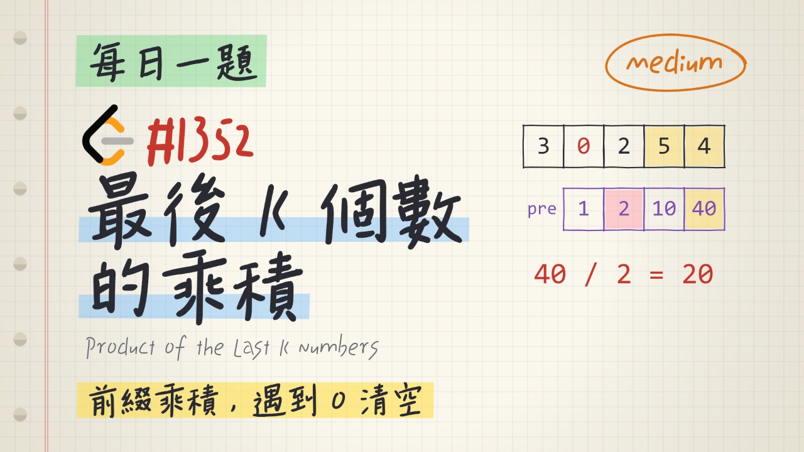
最後 K 個數的乘積 每日一題
暴力法每次查詢要乘 k 次，O(k)。改用前綴乘積：最後 k 個數的乘積 = pre[n − 1] / pre[n − 1 − k]，查詢 O(1)。0 會讓除法壞掉，所以遇到 0 就把前綴陣列清空重來；k 超過「最後一個 0 之後的個數」就代表裡面有 0，直接回傳 0。
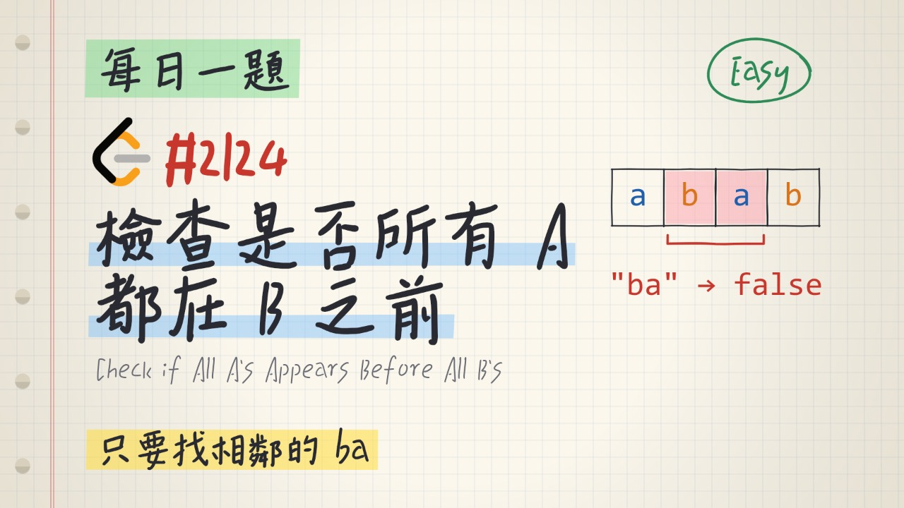
檢查是否所有 A 都在 B 之前 每日一題
最直接的做法是檢查所有 (i, j) 配對有沒有 b 在 a 前面，O(n²)。關鍵觀察：只要有 b 出現在 a 前面，中間某處一定有相鄰的「ba」，所以只要掃一次看相鄰兩個字母，O(n) 時間、O(1) 空間。
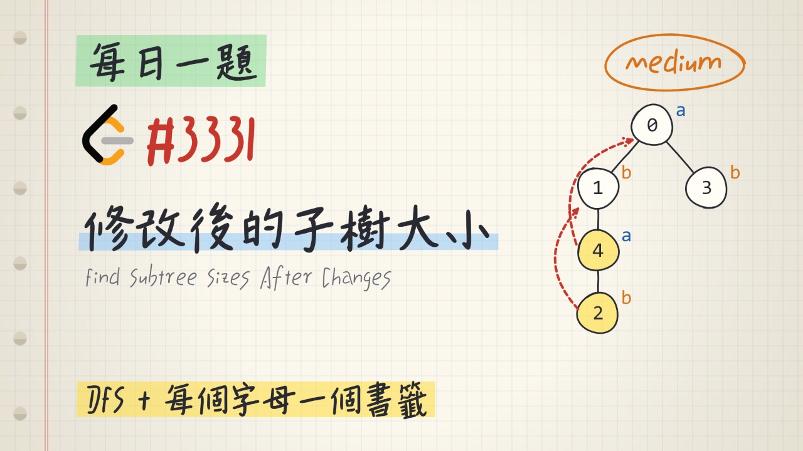
修改後的子樹大小 每日一題
一次 DFS 搞定：每個字母放一個書籤 last[c]，記住目前路徑上最近的同字母節點。進入 x 時用舊書籤決定新父節點（沒有就用原本的父節點），把書籤改成 x；離開 x 時還原書籤，並把 x 的子樹大小加給新父節點。O(n) 時間。
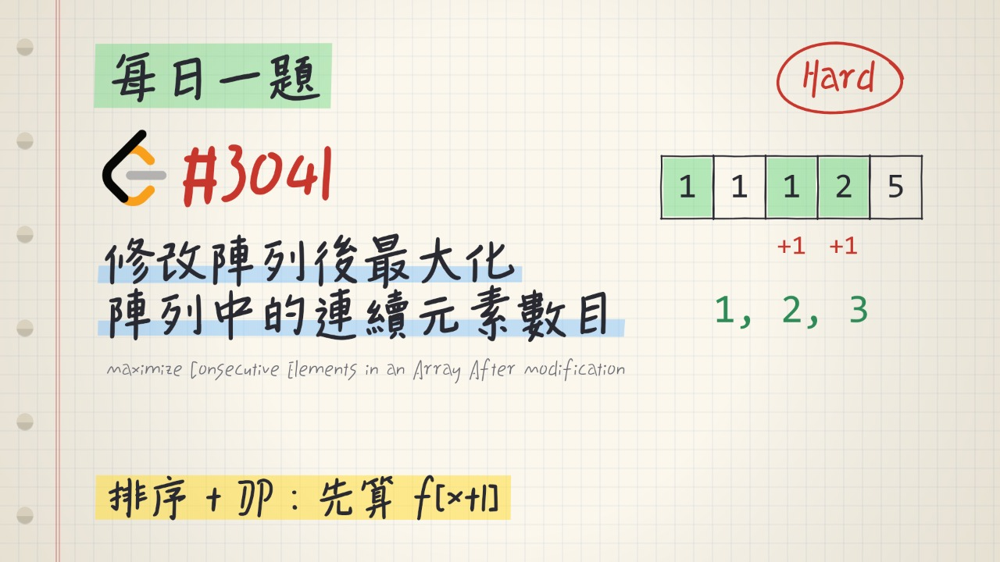
修改陣列後最大化陣列中的連續元素數目 每日一題
選出的元素只看值，所以先排序。f[v] = 以 v 結尾的最長連續長度；每個 x 有兩種選擇：加 1 變成 x + 1，或維持 x。要先算 f[x + 1] = f[x] + 1，再算 f[x] = f[x − 1] + 1，順序反了會用到被覆蓋的值。進階用計數排序代替 sort，做到 O(n + M)。
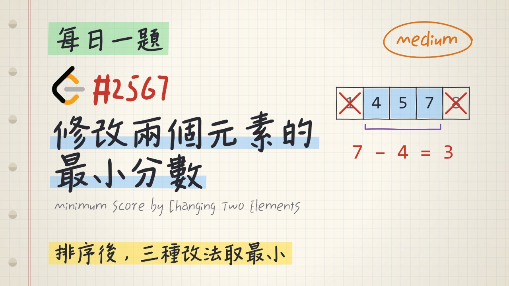
修改兩個元素的最小分數 每日一題
low 一定能變成 0（把改掉的數改成跟別人一樣），所以只剩 high = 最大 − 最小。排序後只有三種改法：改最小的兩個、改最大的兩個、左右各改一個，三者取最小。進階不用排序：一次走訪記下前三小和前三大，O(n) 時間、O(1) 空間。
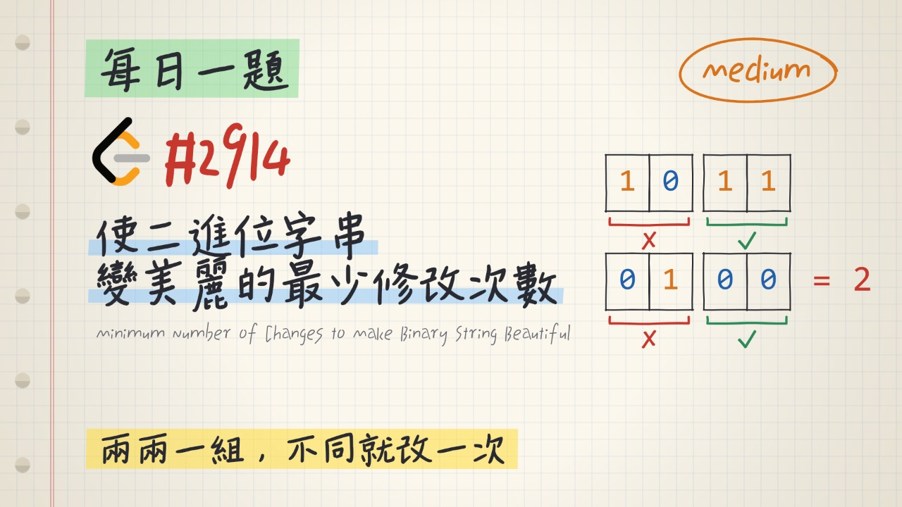
使二進位字串變美麗的最少修改次數 每日一題
關鍵觀察：每一段長度都是偶數，所以切點一定在偶數位置，任何美麗字串都能拆成 (0,1)、(2,3)… 一對一對、每對兩個字元相同。於是只要兩兩一組檢查，不同就改一次，O(n) 時間、O(1) 空間。
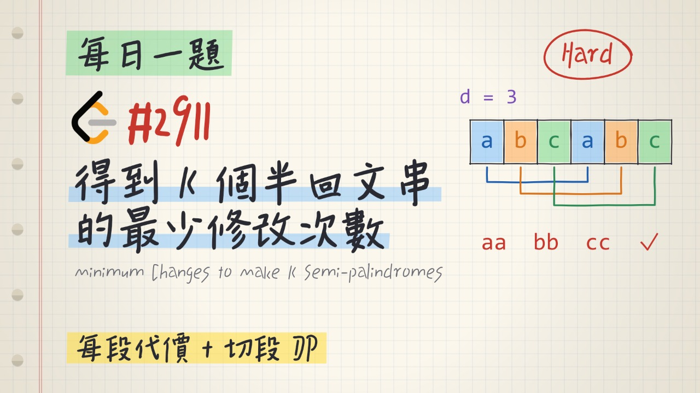
得到 K 個半回文串的最少修改次數 每日一題
分三步：先懂半回文（選一個比長度小的因數 d，按 i mod d 分組，每組各自是回文）；再用因數表算出每一段的代價 cost[l][r]，取所有 d 裡最少的修改次數；最後切段 DP：dp[i][j] = 前 i 個字元切成 j 段的最小代價，枚舉最後一段的起點轉移。
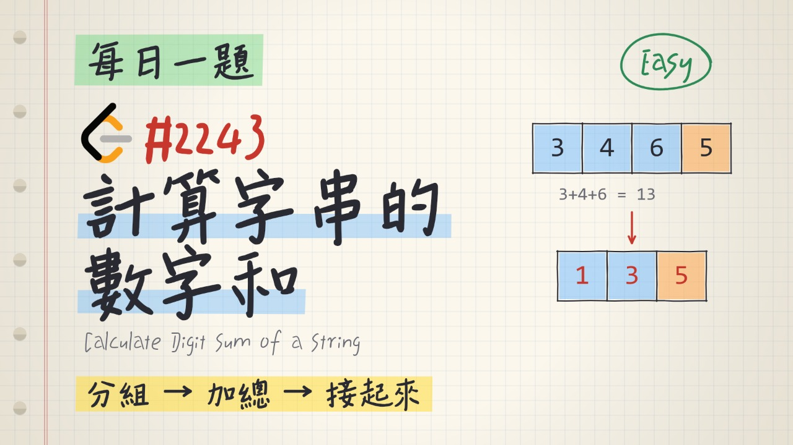
計算字串的數字和 每日一題
照規則模擬：長度大於 k 就做一輪，每 k 個字元分一組（最後一組可以不滿 k 個），把每組的數字加總，再把總和轉回字串接起來，直到長度不超過 k。重點是字元轉數字 s[j] − '0'，以及數字轉字串 to_string。
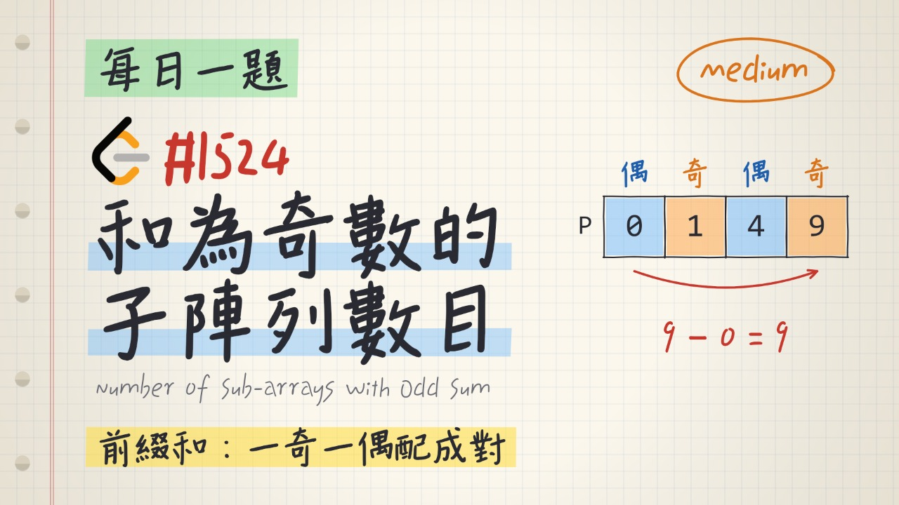
和為奇數的子陣列數目 每日一題
子陣列總和 = 兩個前綴和相減，相減是奇數 ⇔ 兩個前綴和一奇一偶。從左掃到右，只記前綴和的奇偶，以及前面出現過幾個奇數、幾個偶數（P[0] = 0 算一個偶數），現在是奇數就加上偶數的個數、反之亦然。O(n) 時間、O(1) 空間，答案記得取餘數。
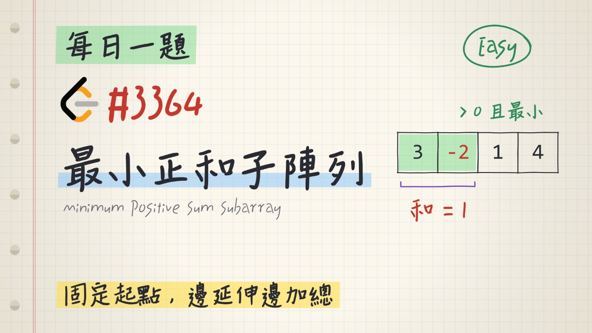
最小正和子陣列 每日一題
練習怎麼枚舉所有子陣列：固定起點 i，往右延伸到 j，總和只要加上新的一個數。長度在 [l, r] 之間而且總和大於 0 就更新答案，找不到回傳 −1。n 最多 100，O(n²) 就夠了。
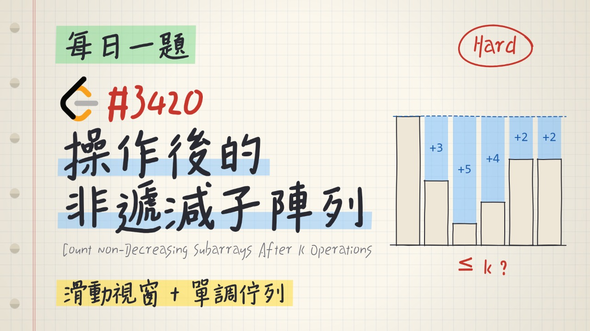
操作後的非遞減子陣列數量 每日一題
一段子陣列的花費 = 每個數墊到前綴最大值要加多少。花費有兩個單調性，所以由右往左移動左端點、用滑動視窗收右端；單調雙端佇列把「補到的高度」分塊存成（高度, 個數），加入和移除都是均攤 O(1)，總共 O(n)，記得用 long long。
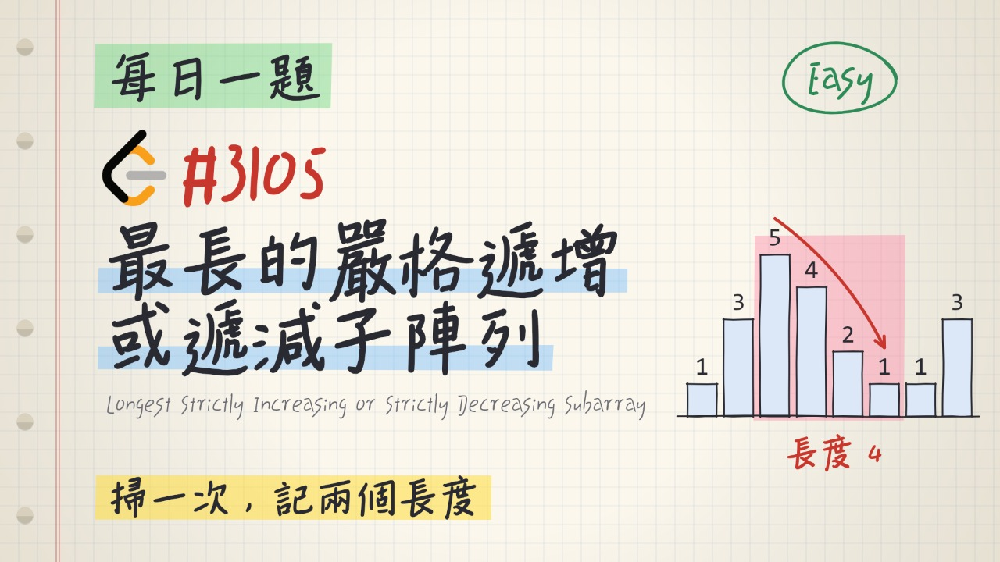
最長的嚴格遞增或遞減子陣列 每日一題
從左到右掃一次，同時記住「以 i 結尾」的遞增長度 inc 和遞減長度 dec：比前一個大就 inc++、dec 歸 1；比前一個小就反過來；相等就兩個都歸 1。答案是一路上的最大值，至少是 1。
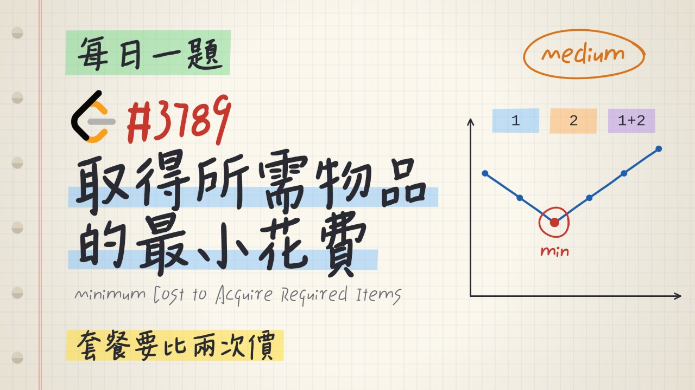
取得所需物品的最小花費 每日一題
枚舉套餐數量 x，總花費 f(x) 是先降後升的折線，最低點只會在 0、min(need)、max(need) 三個轉折點。換成貪心：配對的部分取 min(costBoth, cost1 + cost2)，單邊剩下的取 min(cost, costBoth)，記得用 long long。
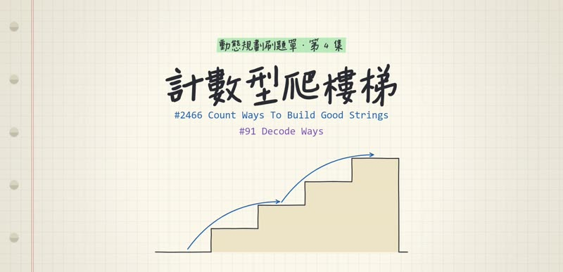
2466 · 91 動態規劃刷題單
2466：把字串長度看成樓梯階數，每步爬 zero 或 one 階，dp[i] = dp[i − zero] + dp[i − one]，記得每一步都取餘數。91：每一步先檢查條件，單獨一個數字不能是 0、兩個數字要在 10 到 26 之間，才能從前一階或前兩階走過來。
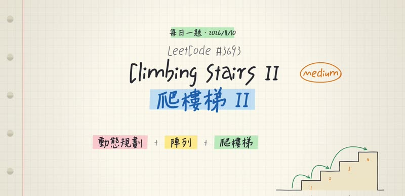
爬樓梯 II 每日一題
每次可以跳 1、2、3 階，從 i 跳到 j 要付 costs[j] + (j − i)²。貪心只看眼前會出錯，改用 dp[j] = min(dp[j−k] + costs[j] + k²)，最後再用三個變數把空間壓到 O(1)。
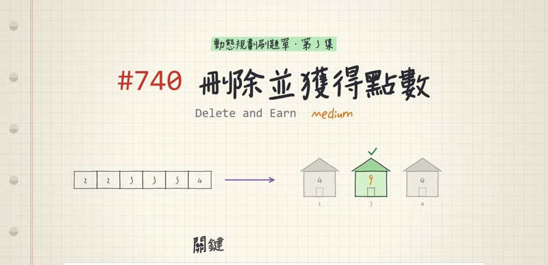
刪除並獲得點數 動態規劃刷題單
拿了一個 x，剩下的 x 也應該全部拿走，所以決定的單位是「哪一種數字」。把相同數字的點數裝進桶子 sum[v]，相鄰的桶子不能同時選，就變成對桶子陣列跑一次打家劫舍。
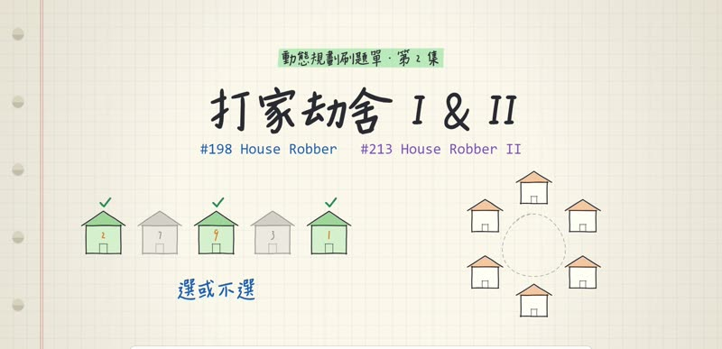
198 · 213 動態規劃刷題單
198：先看兩種貪心為什麼錯，再定義 dp[i] = 前 i 間房子能偷到的最多錢，偷或不偷取較大值。213：房子圍成一圈，拆成「不偷最後一間」和「不偷第一間」兩條直線，各跑一次 198 再取較大值。
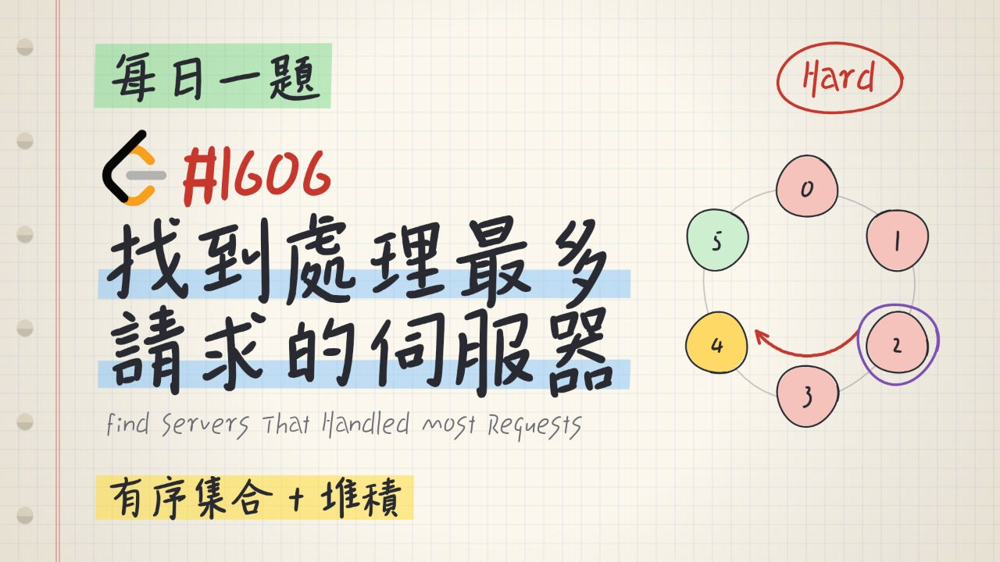
找到處理最多請求的伺服器 每日一題
忙碌的伺服器放進按結束時間排序的堆積，空閒的伺服器放進有序集合，用 lower_bound 找「從 i % k 開始往後第一台」空閒伺服器，找不到就繞回開頭。
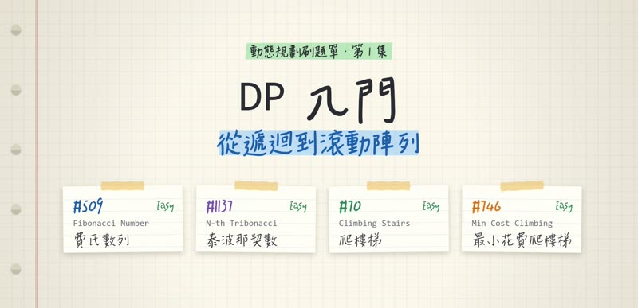
509 · 1137 · 70 · 746 動態規劃刷題單
從費氏數列認識動態規劃：遞迴 → 記憶化 → 由下而上填表 → 滾動變數。再用同一套想法解泰波那契、爬樓梯和最小花費爬樓梯。
統計參與通信的伺服器 每日一題
先數每一列、每一行各有幾台伺服器；一台伺服器只要所在的列或行超過一台，就能通訊。也介紹看成圖、DFS、並查集的另解。
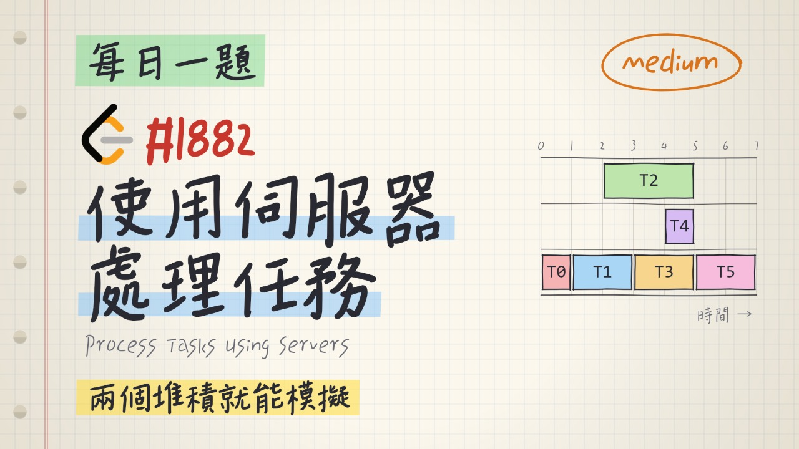
使用伺服器處理任務 每日一題
用兩個堆積模擬：空閒伺服器按（權重, 編號）排，忙碌伺服器按空閒時間排。所有伺服器都在忙時，時間直接跳到最早空出來的那一刻。
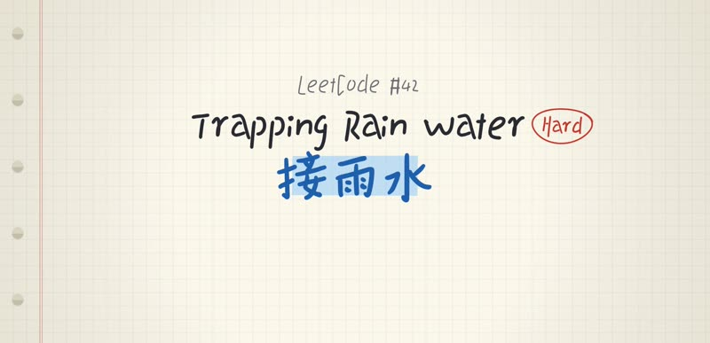
接雨水 經典題
每一格能裝的水 = 左右最高牆的較小值 − 自己的高度。從暴力法一路優化到雙指針 O(n)、O(1) 空間，再用單調棧換個角度一層一層算。